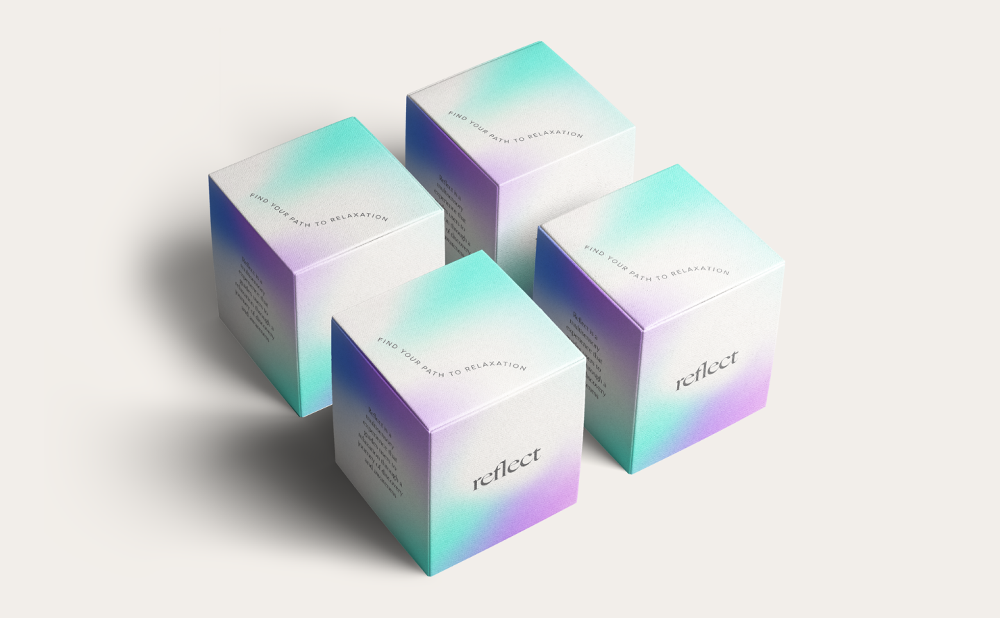
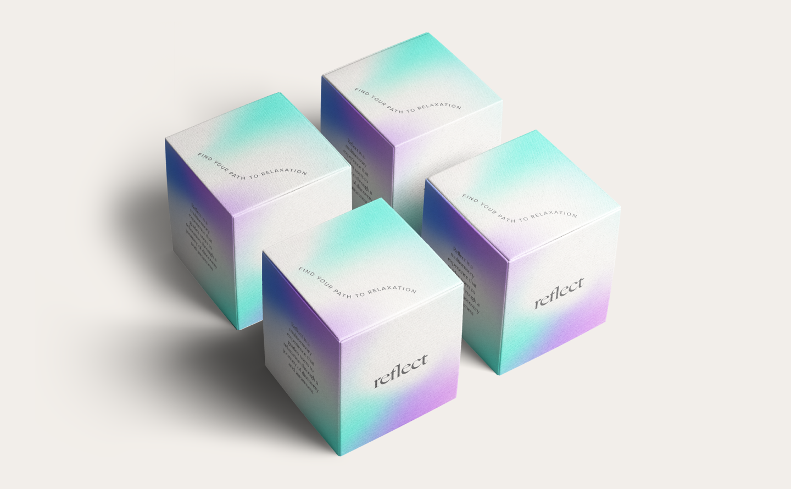
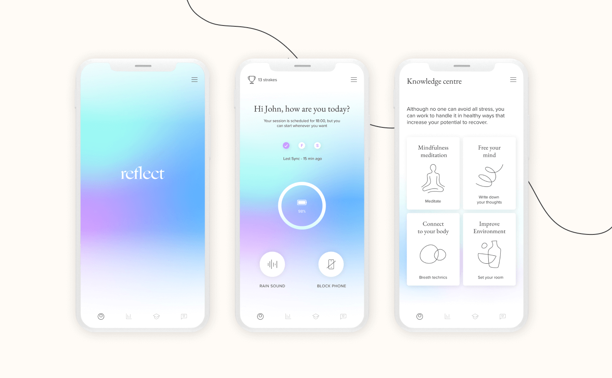
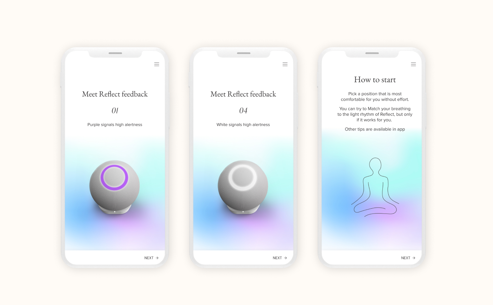
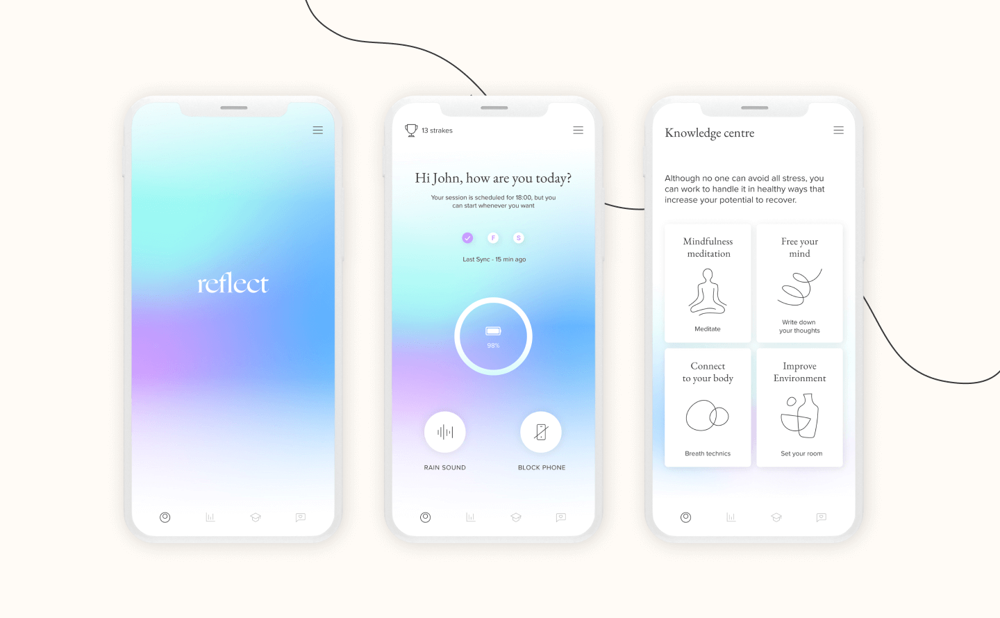
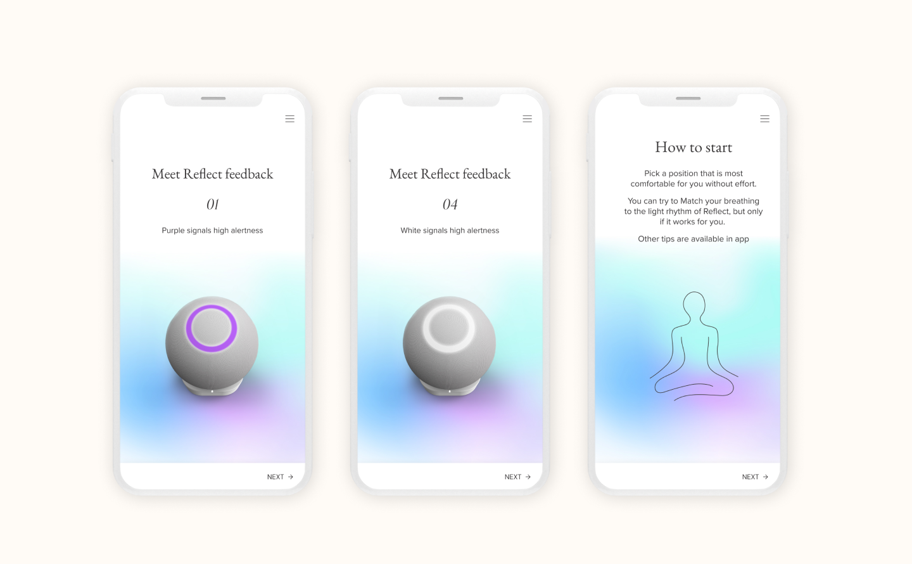
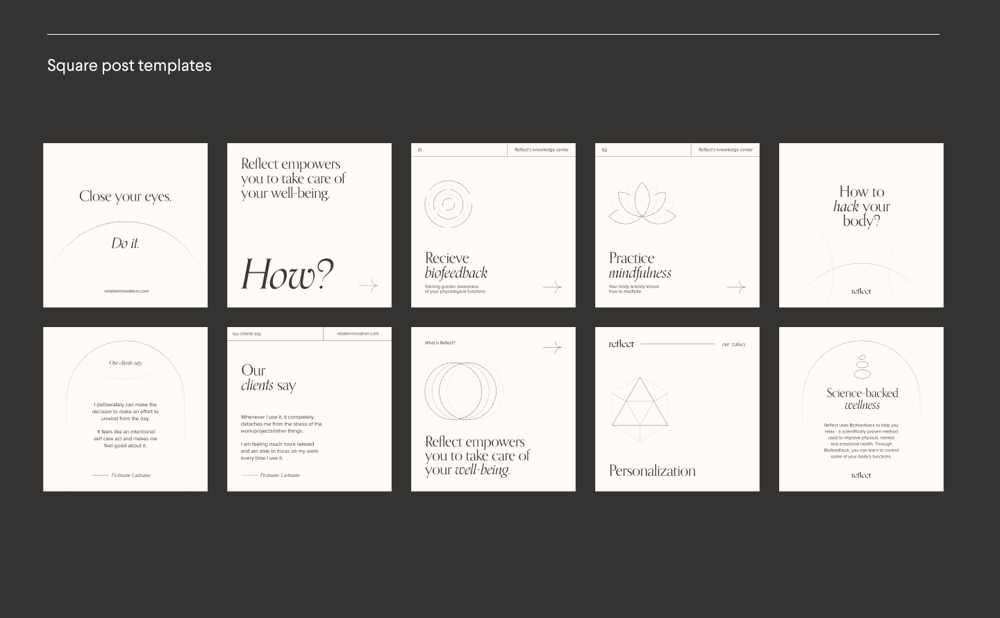
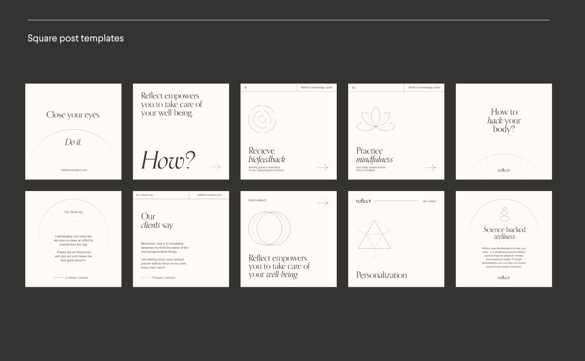
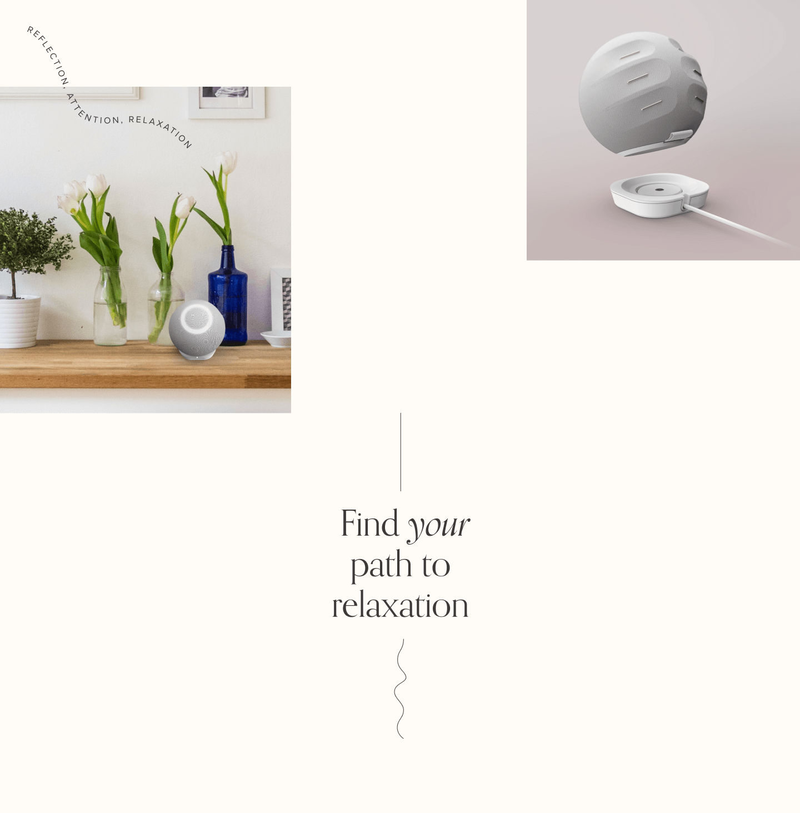
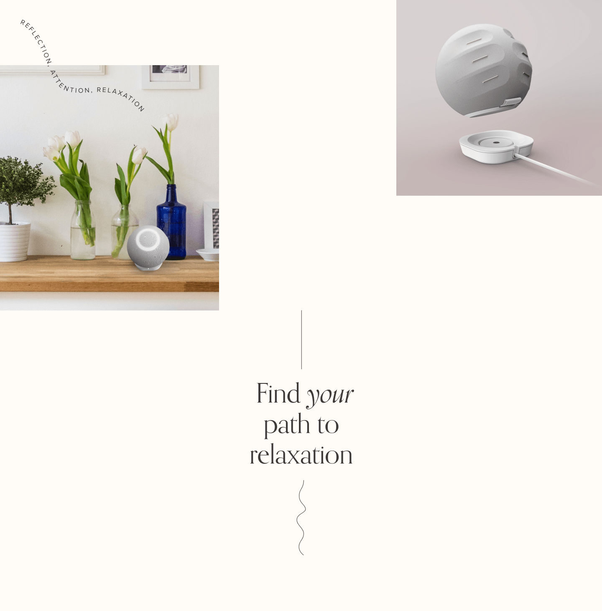

A Brand Sprint for Reflect, a science-backed biofeedback device that
helps users gain control over their relaxation and well being. Through
an interactive, multisensory experience, Reflect leads users to discover
their unique relaxation techniques through a journey of discovery. The
engaging interface and a strong positive feedback loop help users
internalize and improve how they manage their mental states and well
being.
Client | Reflect, Noga Sapir
Art Direction | Studio Under
Brand Lead Designer | Anastasia Vlasenko
Strategic director
| Ori Luzia


 
 


 

 
